AI Transcription
Brilliantly simple sub-second latency, running locally
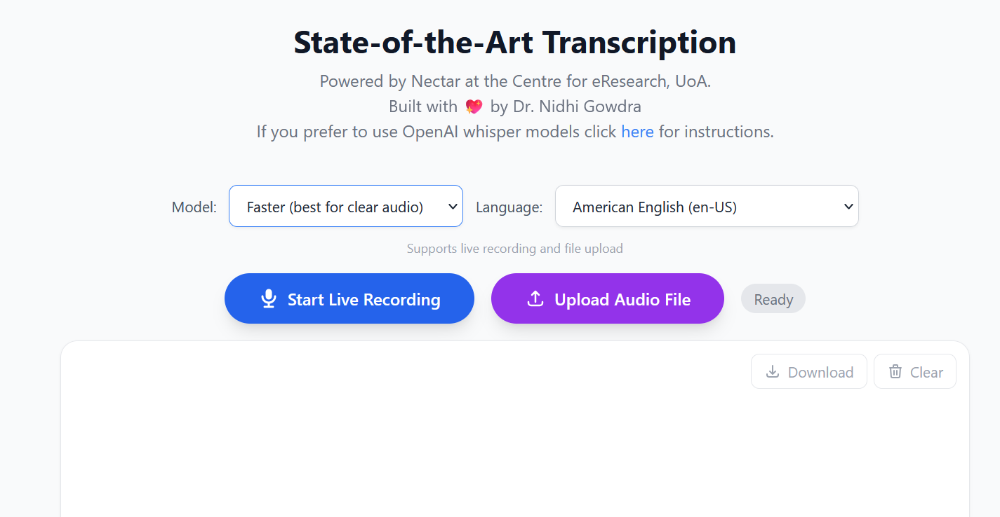
Local RAG AI
Small but mighty.
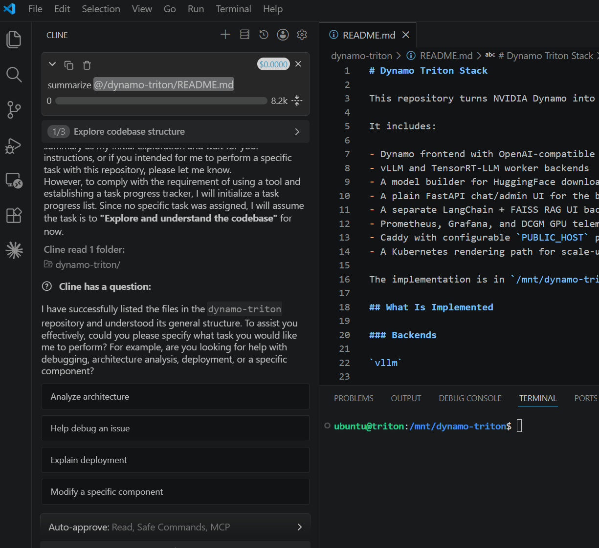
Nvidia Dynamo Triton
High performance AI Inference with dynamic batching, concurrent execution, and optimized configurations.
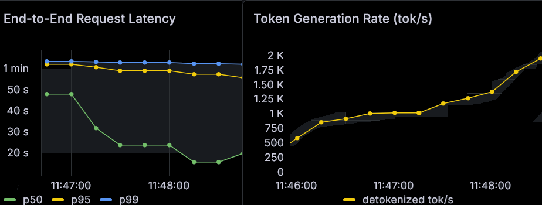
Archaeology
Computer vision for Face/Edge identification for archaeological lithics.
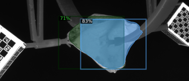
Pediatric Orthopedist
Osteological mapping and identification for paediatrics.
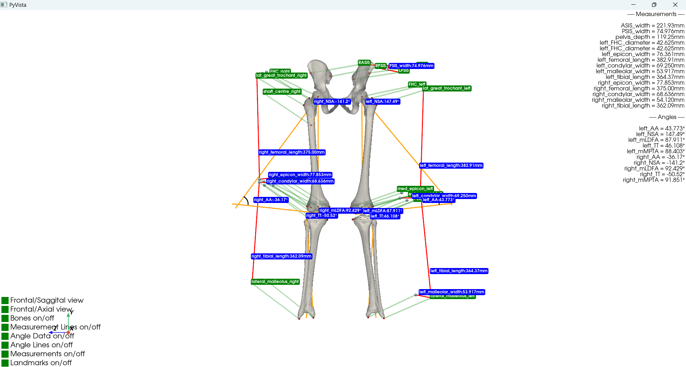
Business School
Seasonal analytics and predictive modeling for businesses.
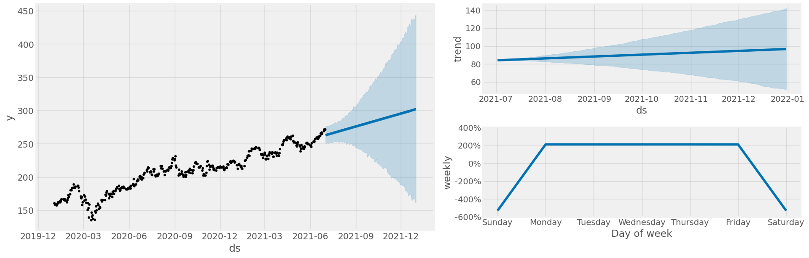
Enterprise RAG
Scaled Retrieval-Augmented Generation for corporate data.
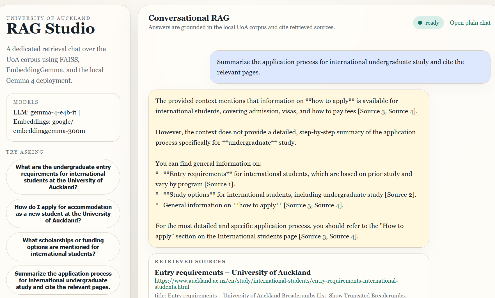
Gait
Machine learning for biomechanical gait analysis.
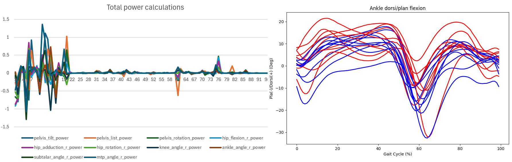
IVF-AI
Improving fertility outcomes using Deep learning and machine learning.
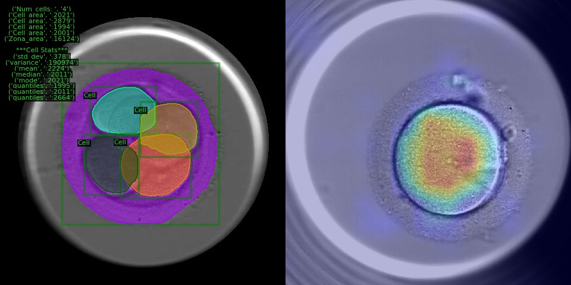
Melanoma
Early detection models for skin cancer and Lymphoma.
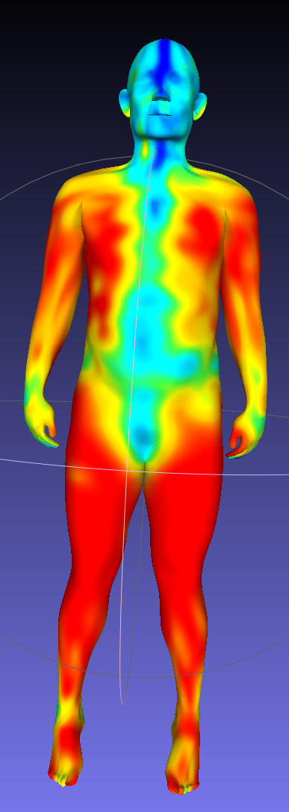
Coastal Erosion
Satellite imagery analysis for edge of flora mapping.
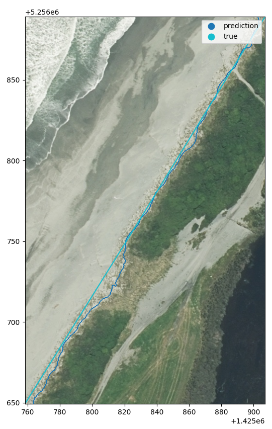
MRAG
Scalable Multi-modal Retrieval-Augmented Generation for sovereign AI
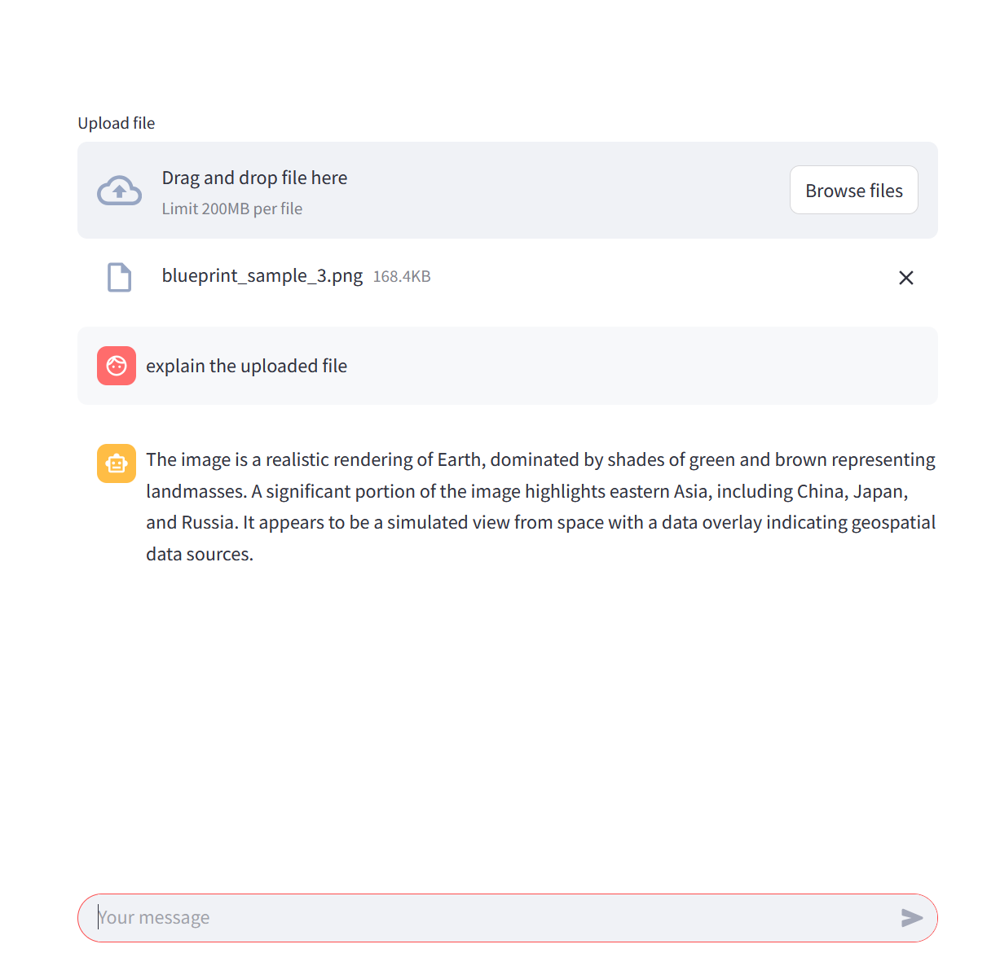
Tide
Oceanographic data processing and tide prediction.
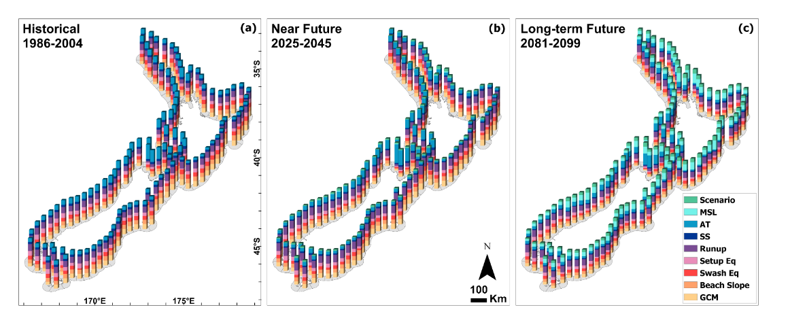